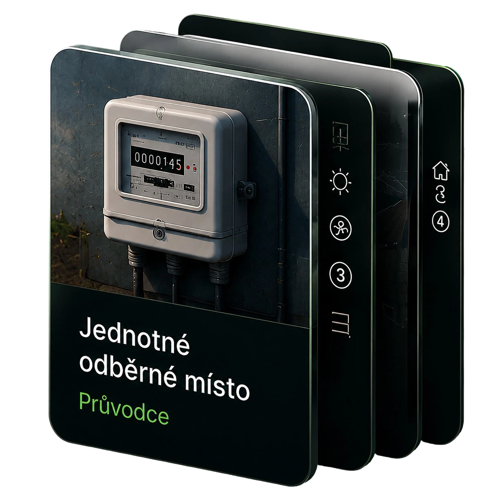
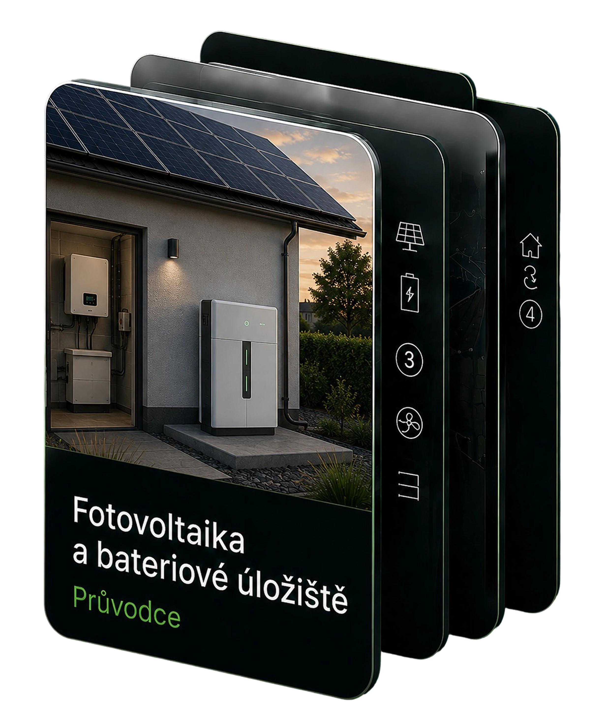
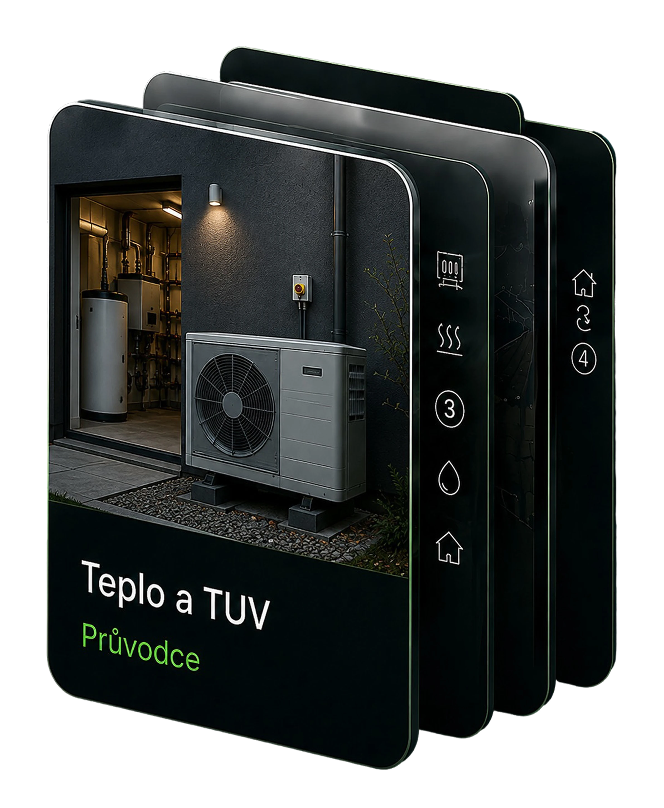
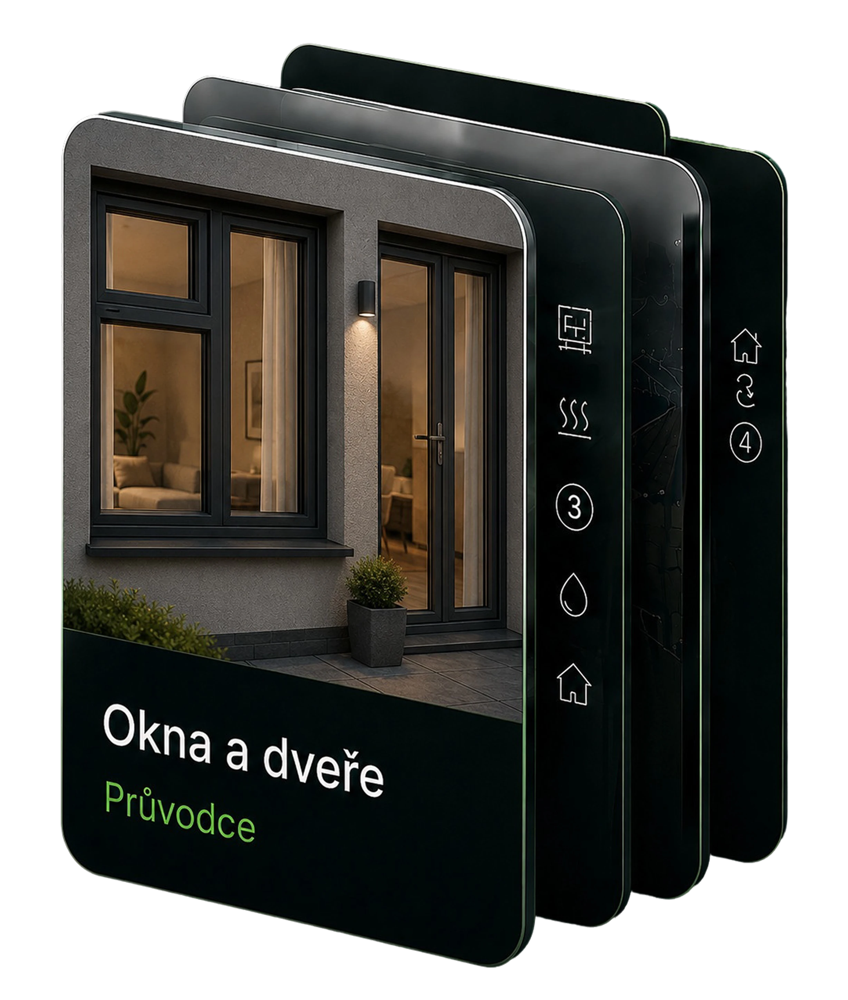
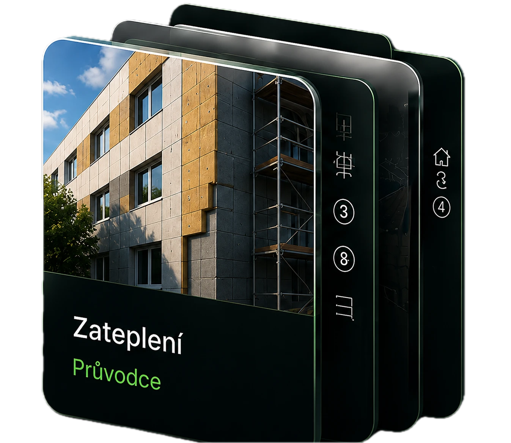
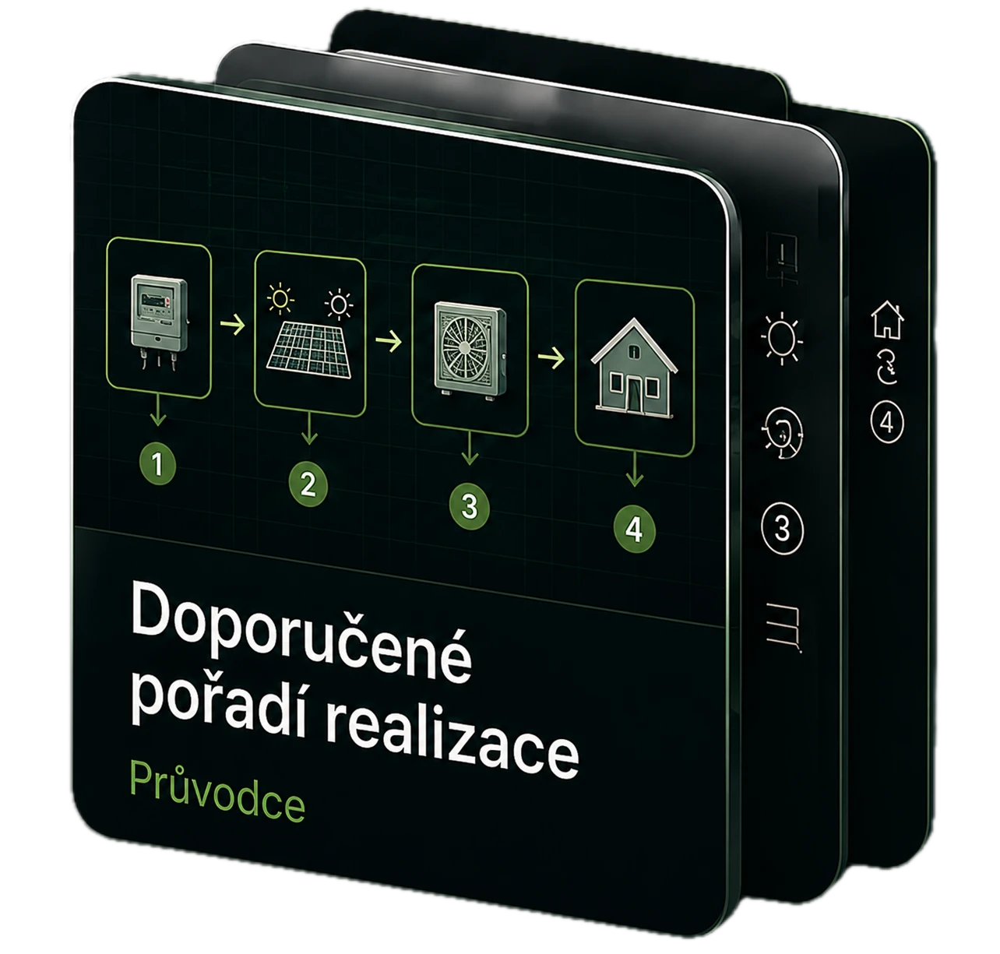
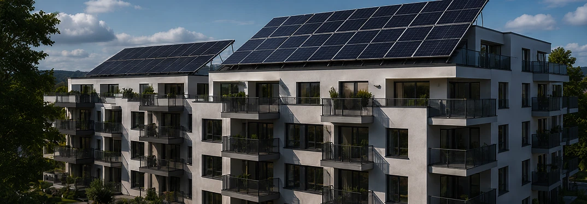
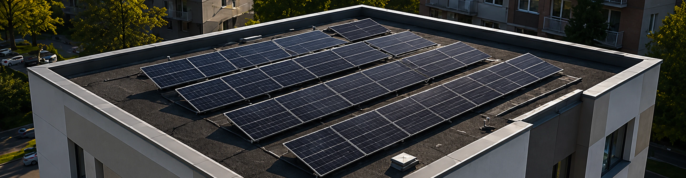
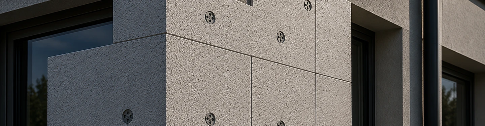

Jednotné odběrné místo (JOM)
Průvodce sloučením odběrných míst — legislativa, technické podmínky, postup hlasování v SVJ a orientační ekonomika přechodu.
Přejít na průvodce →
Edukační portál pro výbory SVJ a správce bytových domů. Průvodci energetickými opatřeními, kalkulačky úspor a propojení s ověřenými dodavateli.
Každý průvodce obsahuje přehled technických a právních podmínek, typické náklady a jejich návratnost pro daný typ opatření v bytovém domě.
Průvodce sloučením odběrných míst — legislativa, technické podmínky, postup hlasování v SVJ a orientační ekonomika přechodu.
Přejít na průvodce →
Průvodce instalací solární elektrárny a bateriového úložiště — technické podmínky, legislativa, rozúčtování elektřiny mezi byty a orientační ekonomika.
Přejít na průvodce →
Průvodce vytápěním a přípravou teplé vody — tepelná čerpadla, kondenzační kotle, solární kolektory a podmínky jejich instalace v bytovém domě.
Přejít na průvodce →
Průvodce výměnou oken a vstupních dveří — technické parametry, dotační možnosti, návaznost na zateplení fasády a postup v SVJ.
Přejít na průvodce →
Průvodce zateplením fasády, střechy a podlahy — technické požadavky, dotační programy, stavební povolení a návaznost na ostatní opatření.
Přejít na průvodce →
Přehled doporučeného pořadí opatření — proč záleží na návaznosti kroků a jak jednotlivá opatření ovlivňují ekonomiku těch následujících.
Přejít na průvodce →
Kalkulačka úspor
Orientační výpočet na základě počtu bytů a roční spotřeby. Pro podrobné porovnání všech opatření je k dispozici plná kalkulačka.
Otevřít plnou kalkulačkuPortál pokrývá všechny fáze rozhodování — od prvního přehledu podmínek až po výběr dodavatele a nastavení rozúčtování.
Přehled podmínek, ve kterých se dům nachází, a identifikace opatření s největším potenciálem úspor.
Porovnání technických a ekonomických parametrů dostupných řešení pro daný typ a stav domu.
SVJ obdrží nabídky od dodavatelů dle zadaných parametrů a vybírá na základě vlastního posouzení.
Nastavení měření, rozúčtování úspor mezi byty a sledování skutečné výkonnosti systému po realizaci.



FAQ
EnergoHub je edukační portál pro předsedy a členy výborů SVJ a bytových družstev. Obsahuje průvodce energetickými úpravami bytových domů — od jednotného odběrného místa přes fotovoltaiku až po tepelná čerpadla a zateplení — a orientační kalkulačku úspor. Portál technologie nedodává ani nerealizuje; přes formulář lze zadat poptávku a obdržet podklady od dodavatelů zaregistrovaných na platformě.
Průvodci jsou stavěni pro předsedy výborů SVJ a bytových družstev, kteří energetické úpravy domu připravují nebo je budou obhajovat na shromáždění. Každý průvodce obsahuje podmínky, za kterých se opatření vyplatí, i situace, kdy se nedoporučuje — včetně čísel s uvedenými předpoklady a přehledu právního rámce.
Portál je financován dodavateli, kteří platí za přístup k poptávkám zaslaným přes platformu. Průvodci a kalkulačka jsou psány jako edukační materiál nezávisle na tom, zda poptávka bude odeslána. Výběr konkrétního dodavatele zůstává zcela na SVJ; portál žádnou firmu nepreferuje ani nepředřazuje.
Kalkulačka odhaduje orientační roční úspory a dobu návratnosti na základě počtu bytů, odhadované spotřeby a zvoleného typu opatření. Výsledky jsou hrubé odhady — nezohledňují konkrétní tarif, stav střechy, technický stav rozvodů ani podmínky případné dotace. Slouží k prvnímu srovnání opatření, ne jako podklad pro investiční rozhodnutí.
Vyplněné kontaktní údaje a výsledky kalkulačky jsou odeslány dodavatelům zaregistrovaným na platformě, jejichž parametry odpovídají zadanému projektu. Odpověď zpravidla přichází do 2–5 pracovních dnů. Poptávka je nezávazná; SVJ není povinno žádný ze zaslaných podkladů přijmout. Kontaktní údaje jsou zpracovávány výhradně pro účely doručení odpovědí.
Ne. Průvodci, kalkulačka a slovník jsou k dispozici bez odeslání poptávky. Poptávkový formulář je volitelný krok pro SVJ, která hledají konkrétní podklady od dodavatelů.
Průvodci jsou v současné době dostupné pro jednotné odběrné místo (JOM) a fotovoltaiku (FVE). Průvodci pro teplo a TUV, výměnu oken a dveří a zateplení jsou v přípravě. Kalkulačka orientačně odhaduje úspory pro všechna čtyři opatření i bez průvodce.
Slovník pojmů vysvětluje základní termíny z oblasti energetiky a práva, které se v průvodcích používají — od JOM a FVE přes distribuční soustavu až po rozúčtování energie. Odkaz na slovník je v hlavní navigaci.